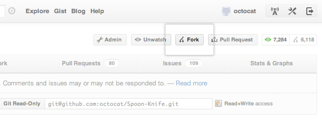

Intro to Git and Github
slides: http://cherimarie.github.io/gdi-core-git-github
Welcome!
Girl Develop It is here to provide affordable and accessible programs to learn software through mentorship and hands-on instruction.
Some "rules"
- We are here for you!
- Every question is important
- Help each other
- Have fun
Review
- Terminal or Git Bash
- mkdir cool_repo
- git init
- [Make changes]
- git add [file]
- git commit -m "commit message"
- git checkout -b new_branch
- git merge master
What we will cover today
- Github
GitHub
- Launched in 2008
- Leader in Social Coding
- GitHub is a commercial site that allows users to host Git repositories publicly and privately
- Open source projects host or mirror their repositories on GitHub
- Post your own code for others to use or contribute to
- Use and learn from the code in other people's repositories
Create your first Github repository
Create your first Github repository
Give it the same name as one of the repositories on your computer.
GitHub
ReadME
While a README isn't a required part of a GitHub repository, it is a very good idea to have one. READMEs are a great place to describe your project or add some documentation such as how to install or use your project. You might want to include contact information - if your project becomes popular people will want to help you out.
GitHub
Setting up remote connection
Copy SSH link from Github repo
# from inside your local git repo
git remote add origin [pasted link from Github]
git pull origin master
#pull first, when the remote repo has a readme
git push origin master
#push your local work to the repo
GitHub
Pulling from remote repository
If you are working with a team, you want to make sure that you have everyone's changes before pushing your changes to the GitHub repo
#pull current state from Github
git pull origin master
# fix any conflicts (see merge conflicts above) and commit
# then, push local changes to GitHub
git push origin master
GitHub
Push to GitHub Repo
As you make changes locally, push to Github.
Make a change to your README file, then add and commit it. Then, push!
git push origin master
Go check out your Github repo online to see your changes.
GitHub
Branches
When you push and pull, the command includes the name of the branch. If you're working on "feature" branch, make sure you push and pull to "feature".
git pull origin feature
git push origin feature
GitHub
Branches
If there are branches available on Github repo that are not in your local repo, fetch from Github, then you'll be able to check them out locally.
git fetch origin
From github.com:org_name/project
b3d8ce0..0754251 master -> origin/master
* [new branch] rad_feature -> origin/rad_feature
git checkout rad_feature
Let's Develop It!
Team Project
- Divide up into groups of 2 or 3
- One person, create a Github repository
- Add the other group member(s) as collaborators
- Everyone clones the repo locally (see next slide)
- Take turns pushing, pulling, merging code!
Cloning
Cloning allows you to recreate a Github repository to your computer, really simply!
Find this link on the lower right of the repo's Github page, and copy it.
Cloning
Navigate to the location you want new directory to be in on your computer- NOT INSIDE ANOTHER GIT REPO! Then, clone to get a local repository of your fork.
git clone [pasted link]
cd [repo name]
Cloning
The 'git clone' command does a lot!
- Creates a local directory for the repo
- Initializes that directory as a Git repo
- Adds a remote connection called 'orgin' to the Github repo it was cloned from
- Pulls from the Github repo so it's perfectly up-to-date
Forking
- There are MILLIONS of public repositories on GitHub
- If you want to use or contribute to a repository, you can fork it.
- This will create a copy of it in your Github account
Forking
Go to https://github.com/cherimarie/GitResources and hit the fork button.
Forking
Clone your forked repo to your computer.
Forking
Add a remote connection to the original repository, so you can stay up to date with their changes:
git remote add upstream https://github.com/original-username/FORKED-REPO-NAME.git
# creates a remote connection, called "upstream", to the original repo on Github
git fetch upstream
# Pulls in changes not present in your local repository, without modifying your files
Pull Requests
- After you fork and clone a repository, all pushed changes will go to your fork
- These changes will not affect the original repository
- If you would like to get your changes to be incorporated into the original repo, you can submit a pull request
Pull Requests
- Go to your GitResources directory
- Add a resource to the list
- Save, add, and commit your changes
- Push your changes to your Github repo
git add .
git commit -m "Add great new resource"
git push origin master
Starting a pull request
Visit your Github repo page
Previewing and sending pull request

Fill out the form with a polite, helpful description, and submit.
Managing pull requests
How to manage pull requests is out of the scope of this short workshop, but you can learn more from the Github Collaborating Tutorials
Questions?
Thanks!
Cheri Allen
@cherimarie